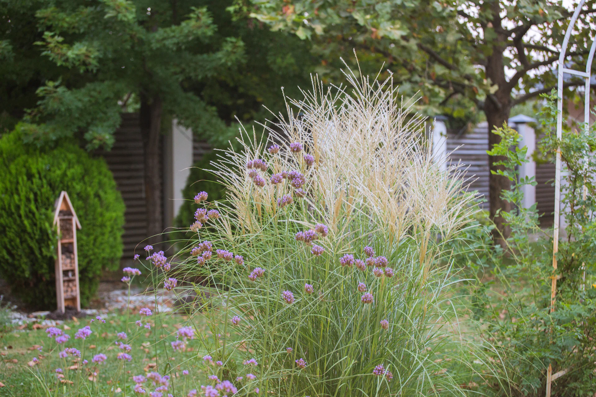
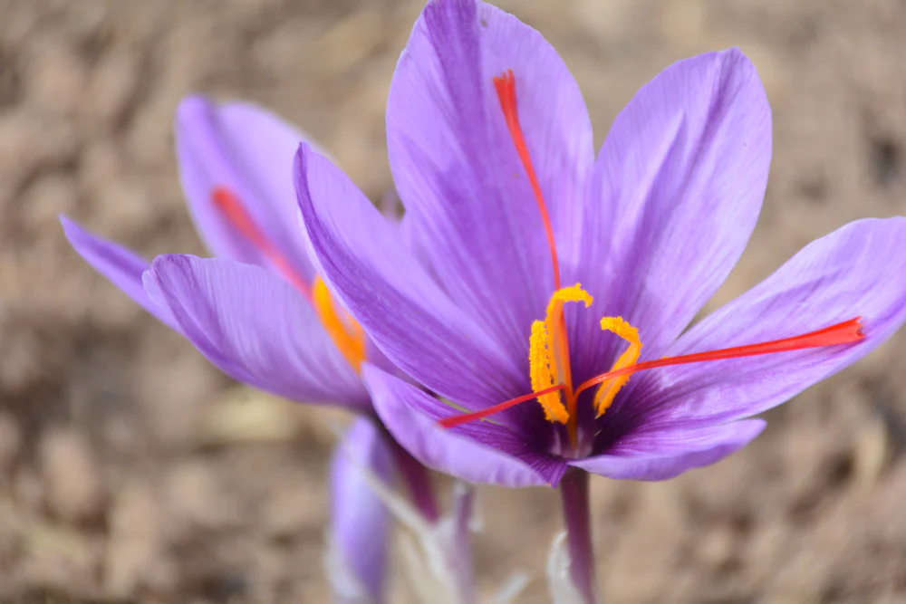

Tuinaanleg
Een nieuwe tuin, of een tuin die opnieuw begint. Mathieu komt kijken, maakt een voorstel en legt de tuin aan.
Over tuinaanleg
Mathieu Vergote legt tuinen aan en onderhoudt ze, voor particulieren en bedrijven in Gits en omgeving.
Een tuin is de plek waar u thuiskomt. Mathieu zorgt dat hij er mooi bij ligt: van een nieuwe aanleg tot het snoeien van hagen, bomen en struiken. Het groenafval neemt hij mee. U hoeft alleen nog te genieten.
Een nieuwe tuin, of een tuin die opnieuw begint. Mathieu komt kijken, maakt een voorstel en legt de tuin aan.
Over tuinaanlegHagen snoeien, bomen en struiken bijwerken, groenzones onderhouden. Eenmalig of op regelmatige basis.
Over tuinonderhoud
Samen met zijn zoon Juliaan kweekt Mathieu saffraan in Gits: de rode draadjes uit de bloem van de saffraankrokus.
Over de saffraanJanuari winternu
Op een droge dag zonder vorst is het een goed moment om fruitbomen te snoeien. En om rustig te bedenken wat er dit jaar anders mag.
Over snoeien en onderhoudFebruari winternu
Struiken, fruitbomen en knotwilgen krijgen nu hun snoeibeurt, zolang ze nog in rust zijn. Hagen snoeit u het best vóór half maart, als de vogels beginnen te nestelen.
Over snoeien en onderhoudMaart lentenu
Tijd om de borders op te ruimen, oude stengels weg te knippen en de grond te voeden met compost. Vanaf half maart laten we de hagen met rust: het broedseizoen begint.
Over tuinonderhoudApril lentenu
De grond warmt op. Een goede maand om vaste planten en heesters te planten, of om een nieuw stuk tuin aan te leggen.
Over tuinaanlegMei lentenu
Na half mei is de kans op nachtvorst voorbij en mogen ook de gevoelige planten naar buiten. Het blad van de saffraankrokus verdort: de knollen gaan in zomerrust.
Over de saffraanJuni zomernu
De tuin staat in volle groei. Water geven op droge dagen, uitgebloeide bloemen wegknippen, en vooral: buiten zitten. In de hagen zitten nog jonge vogels.
Over tuinonderhoudJuli zomernu
Geef water in de vroege ochtend of 's avonds, dan verdampt er het minst. Ook de zomersnoei van fruitbomen kan nu.
Over tuinonderhoudAugustus zomernu
Vanaf half augustus worden saffraanknollen geplant. En na 15 augustus mogen de hagen weer in vorm: het broedseizoen is voorbij.
Over de saffraanSeptember herfstnu
Warme grond en meer regen: een uitstekende maand om aan te leggen en te planten. De hagen krijgen hun tweede snoeibeurt.
Over tuinaanlegOktober herfstnu
Oktober is oogstmaand. Mathieu en Juliaan plukken de paarse bloemen met de hand en halen er de rode draadjes uit.
Over de saffraanNovember herfstnu
„Op Sint-Catharina neemt elk hout wortel”, zegt het spreekwoord over 25 november. Het plantseizoen voor bomen, hagen en heesters is begonnen.
Over tuinaanlegDecember winternu
De tuin slaapt. Laat wat blad liggen als deken voor de borders, en denk rustig na over wat u volgend jaar wilt.
Plannen bespreken met Mathieu
Hagen in vorm, struiken bijgewerkt, het snoeiafval opgeruimd. Zo blijft uw tuin een plek om te zitten en te kijken.
Rustig, stap voor stap, en altijd in overleg.
U vertelt wat u voor ogen hebt. Mathieu komt kijken naar de grond, de ligging en wat er al staat.
U krijgt een duidelijk voorstel: wat er gebeurt en wat het kost.
Mathieu gaat aan de slag en houdt u op de hoogte tot alles klaar is.
Wilt u dat de tuin mooi blijft? Mathieu neemt ook het onderhoud op zich.
Bel of mail Mathieu en vertel wat u in gedachten hebt.
0477 47 90 73